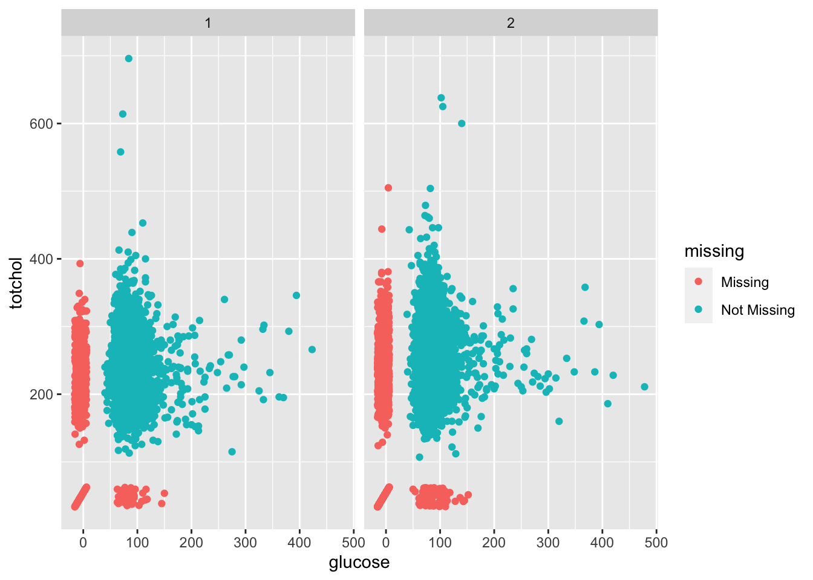

Chapter 7 Longitudinal cohort study designs
7.1 Readings
The required readings for this chapter are:
Andersson et al. (2019) Provides background on the study we’ll use in this chapter for our example data
Wong et al. (1989) An epidemiological study using the study data.
There are also some supplemental readings you may find useful. The following are a series of instructional papers on survival analysis, that are meant as general background on how to fit survival analysis models:
This article is a good summary for the limitations of Hazards Ratios and offers an alternative survival analysis approach enabling the plotting of adjusted cumulative incidence (and similarly survival rate) curves:
- Hernán (2010) (Note that there is an online erratum for this article: “On page 15, column 1, second full paragraph: ‘… and the average HR is ensured to reach the value 1.’ should instead say, ‘… and the risk ratio is ensured to reach the value 1.’”)
These articles provide more background on the Framingham Heart Study:
- Dawber, Meadors, and Moore Jr (1951) A paper from the 1950s, this presents the rationale behind the design of the Framingham Heart Study
- Dawber, Moore, and Mann (2015) A reprint of the paper describing the first results to come out of the Framingham Heart Study
These articles provide some general reviews on our current understanding of the epidemiology and etiology of heart disease and its risk factors:
- Wong (2014) Review of large epidemiological studies on coronary heart disease and key findings
- Ziaeian and Fonarow (2016) Review on the epidemiology and etiology of heart failure
- Valenzuela et al. (2021) Review of risk factors for hypertension
- Zhou et al. (2021) Review on global epidemiology of hypertension
7.2 Longitudinal cohort data
Our example data for this chapter comes from the Framingham Heart Study. This is a cohort study that began in 1948 (Andersson et al. 2019). At the time (and continuing today), heart disease was the most common cause of death in the US—a notable shift from earlier times, when infectious diseases played a larger role in mortality. While heart disease was an important cause of death, however, very little was known about risk factors for heart disease, outside of a little concerning the role of some infectious and nutritional diseases that affected the heart (Dawber, Meadors, and Moore Jr 1951; Andersson et al. 2019). This study was designed to collect a group of people without evident cardiovascular disease (although this restriction was eased in practice) and track them over many years, to try to identify risk factors for developing cardiovascular disease. The study subjects were tracked over time, with data regularly collected on both risk factors and cardiovascular outcomes. The study was revolutionary in identifying some key risk factors for coronary heart disease, including elevated blood pressure, high cholesterol levels, being overweight, and smoking (Andersson et al. 2019). It was also revolutionary in identifying high blood pressure as a risk for other cardiovascular outcomes, including stroke and congestive heart failure (Andersson et al. 2019).
The original cohort included about 5,200 people from the town of Framingham, MA. The example data is a subset of data from this original cohort. You can download the example dataset for this class by clicking here and then saving the content of the page as a csv file (we recommend using the original filename of “frmgham2.csv”). There is also a codebook file that comes with these data, which you can download for this class by clicking here. This codebook includes some explanations about the columns in the data, as well as how multiple measurements from a single study subject are included in the data.
The data are saved in a csv format, and so they can be read into R using the
read_csv function from the readr package (part of the tidyverse). You can use the following code to read in these data, assuming you have saved them in a “data” subdirectory of your current
working directory:
library(tidyverse) # Loads all the tidyverse packages, including readr
fhs <- read_csv("data/frmgham2.csv")
fhs## # A tibble: 11,627 x 39
## RANDID SEX TOTCHOL AGE SYSBP DIABP CURSMOKE CIGPDAY BMI DIABETES BPMEDS
## <dbl> <dbl> <dbl> <dbl> <dbl> <dbl> <dbl> <dbl> <dbl> <dbl> <dbl>
## 1 2448 1 195 39 106 70 0 0 27.0 0 0
## 2 2448 1 209 52 121 66 0 0 NA 0 0
## 3 6238 2 250 46 121 81 0 0 28.7 0 0
## 4 6238 2 260 52 105 69.5 0 0 29.4 0 0
## 5 6238 2 237 58 108 66 0 0 28.5 0 0
## 6 9428 1 245 48 128. 80 1 20 25.3 0 0
## 7 9428 1 283 54 141 89 1 30 25.3 0 0
## 8 10552 2 225 61 150 95 1 30 28.6 0 0
## 9 10552 2 232 67 183 109 1 20 30.2 0 0
## 10 11252 2 285 46 130 84 1 23 23.1 0 0
## # … with 11,617 more rows, and 28 more variables: HEARTRTE <dbl>,
## # GLUCOSE <dbl>, educ <dbl>, PREVCHD <dbl>, PREVAP <dbl>, PREVMI <dbl>,
## # PREVSTRK <dbl>, PREVHYP <dbl>, TIME <dbl>, PERIOD <dbl>, HDLC <dbl>,
## # LDLC <dbl>, DEATH <dbl>, ANGINA <dbl>, HOSPMI <dbl>, MI_FCHD <dbl>,
## # ANYCHD <dbl>, STROKE <dbl>, CVD <dbl>, HYPERTEN <dbl>, TIMEAP <dbl>,
## # TIMEMI <dbl>, TIMEMIFC <dbl>, TIMECHD <dbl>, TIMESTRK <dbl>, TIMECVD <dbl>,
## # TIMEDTH <dbl>, TIMEHYP <dbl>You can find full details on the structure of this data in the codebook. At a broad scale, note that it includes several health outcomes related to heart disease, which the codebook calls “events” (DEATH: indicator of death from any cause; ANYCHD: indicator of one of several types of events related to coronary heart disease; HOSPMI: Hopitalization for myocardial infarction [heart attack], etc.). The data also includes a number of risk factors that the study researchers hypothesized might be linked to cardiovascular disease (CURSMOKE: if the study subject is currently a smoker; TOTCHOL: serum total cholesterol; SYSBP, DIABP: measures of the systolic and diastolic blood pressure, respectively; BMI: Body Mass Index; etc.). Finally, there are some characteristics of the study subject, like age (AGE) and sex (SEX), as well as some variables that are connected to either the time of the record or the time of certain events (or of censoring, if the event did not happen during follow-up).
As you look through the data, pay attention to some features that are more characteristic of cohort studies, compared to features of the time series data we worked with in earlier chapters:
- One important difference compared to a time-series dataset is the
RANDIDvariable. This is the unique identifier for unit for which we have repeated observations for over time. In this case theRANDIDvariable represents a unique identifier for each study participant, with multiple observations (rows) per participant over time. - The
TIMEvariable indicates the number of days that have elapsed since beginning of follow-up of each observation.TIMEis always 0 for the first observation of each participant (whenPERIODequals 1, for the first examination), and then for following measurements will track the time since follow-up started for that study participant. - The number of observations varies between participants (typical of many cohort studies)
- The time spacing between observations is not constant. This is because the repeated observations in the Framingham Heart Study are the result of follow-up exams happening 3 to 5 years apart. Many longitudinal cohorts will instead have observations over a fixed time interval (monthly, annual, biannual etc), resulting in a more balanced dataset.
- Observations are given for various risk factors, covariates and cardiovascular outcomes. Some will be invariant for each participant over time (
SEX,educ), while others will vary with each exam.
From a data management perspective, we might want to change all the column names
to be in lowercase, rather than uppercase. This will save our pinkies some
work as we code with the data! You can make that change with the following
code, using the str_to_lower function from the stringr package (part of
the tidyverse):
## # A tibble: 11,627 x 39
## randid sex totchol age sysbp diabp cursmoke cigpday bmi diabetes bpmeds
## <dbl> <dbl> <dbl> <dbl> <dbl> <dbl> <dbl> <dbl> <dbl> <dbl> <dbl>
## 1 2448 1 195 39 106 70 0 0 27.0 0 0
## 2 2448 1 209 52 121 66 0 0 NA 0 0
## 3 6238 2 250 46 121 81 0 0 28.7 0 0
## 4 6238 2 260 52 105 69.5 0 0 29.4 0 0
## 5 6238 2 237 58 108 66 0 0 28.5 0 0
## 6 9428 1 245 48 128. 80 1 20 25.3 0 0
## 7 9428 1 283 54 141 89 1 30 25.3 0 0
## 8 10552 2 225 61 150 95 1 30 28.6 0 0
## 9 10552 2 232 67 183 109 1 20 30.2 0 0
## 10 11252 2 285 46 130 84 1 23 23.1 0 0
## # … with 11,617 more rows, and 28 more variables: heartrte <dbl>,
## # glucose <dbl>, educ <dbl>, prevchd <dbl>, prevap <dbl>, prevmi <dbl>,
## # prevstrk <dbl>, prevhyp <dbl>, time <dbl>, period <dbl>, hdlc <dbl>,
## # ldlc <dbl>, death <dbl>, angina <dbl>, hospmi <dbl>, mi_fchd <dbl>,
## # anychd <dbl>, stroke <dbl>, cvd <dbl>, hyperten <dbl>, timeap <dbl>,
## # timemi <dbl>, timemifc <dbl>, timechd <dbl>, timestrk <dbl>, timecvd <dbl>,
## # timedth <dbl>, timehyp <dbl>To look a bit more closely at how this dataset works, let’s take a look just at the observations of the oldest study subjects at the first examination, those 69 or older (age >= 69) at their first examination (period == 1):
## [1] 3603542 3762702 4726021 7198139 7351212 7568367 7659676 7695005 8723664
## [10] 9643995 9686180 9789948Once we have the IDs of these study subjects (oldest_subjects), we can pull out the study data just for them. I’m limiting to a few columns: their ID (randid), the time of each examination (time), the number of each examination (period), whether they died during follow-up (died), and the number of days between the first examination and either death (if they died during follow-up) or censoring (i.e., stopped tracking the subject or lost them to follow-up) (timedth):
## # A tibble: 24 x 5
## randid time period death timedth
## <dbl> <dbl> <dbl> <dbl> <dbl>
## 1 3603542 0 1 1 1825
## 2 3762702 0 1 1 3076
## 3 3762702 2253 2 1 3076
## 4 4726021 0 1 1 4275
## 5 4726021 2134 2 1 4275
## 6 7198139 0 1 1 5384
## 7 7351212 0 1 1 4396
## 8 7351212 2146 2 1 4396
## 9 7351212 4283 3 1 4396
## 10 7568367 0 1 1 1563
## # … with 14 more rowsWe can explore this subset of the data by plotting, for each of these study subjects, the timing of each of their examination periods, whether they died during follow-up, and the timing of their death or censoring:
fhs %>%
filter(randid %in% oldest_subjects) %>%
select(randid, time, period, death, timedth) %>%
mutate(randid = as_factor(randid),
randid = fct_reorder(randid, timedth), # Arrange by time to death
period = as_factor(period),
death = as_factor(death),
timey = time / 365.25, # Convert from days to years
timedthy = timedth / 365.25) %>%
ggplot() +
geom_segment(aes(x = 0, xend = timedthy,
y = randid, yend = randid), color = "lightgray") +
geom_point(aes(x = timedthy, y = randid, fill = death), shape = 22) +
geom_point(aes(x = timey, y = randid, color = period)) +
theme_classic() +
labs(x = "Time since first examination (years)",
y = "Patient ID",
color = "Examination\nperiod") +
scale_fill_manual(name = "", values = c("white", "black"),
labels = c("Survived\nfollow-up", "Died during\nfollow-up"))You can see that we have at least one examination (period 1) for each of the study subjects, and for some we have as many as three. One of these study subjects was tracked for almost 25 years without a recorded death (subject ID 9789948). All the other subjects in this subset died during follow-up. Some died within a few years of the first examination, and so did not survive to a second or later examination. Others survived longer but missed some later examinations.
As you work with these data, keep in mind that they have multiple measurements (rows) for some but not all of the study subjects, and that events are recorded both in terms of whether they happened during follow-up (e.g., death) and also how long after the first examination the event occurred or the data for the subject was censored (e.g., timedth).
Applied exercise: Exploring longitudinal cohort data
Read the example cohort data in R and explore it to answer the following questions:
- What is the number of participants and number of observations in the
fhsdataset? - Is there any missingness in the data?
- How many participants died during the observation period? What is the distribution of age at time of death?
- What is the distribution of BMI among MI cases and non-cases? How about between smokers and non-smokers?
Based on this exploratory exercise, talk about the potential for confounding when these data are analyzed to estimate the association between smoking and risk of incident MI.
Applied exercise: Example code
- What is the number of participants and the number of observations in the
fhsdataset? (i.e what is the sample size and number of person-time observations)
In the fhs dataset, the number of participants will be equal to the number of unique ID’s (The RANDID variable which takes a unique value for each participant). We can extract this using the unique function nested within the length function
## [1] 4434If you’d like to use tidyverse tools to answer this question, you can do
that, as well. The pipe operator (%>%) works on any type of object—it will
take your current output and include it as the first parameter value for the
function call you pipe into. If you want to perform operations on a column of
a dataframe, you can use pull to extract it from the dataframe as a vector, and
then pipe that into vector operations:
## [1] 4434It’s entirely a personal choice whether you use the $ operator and “nesting”
of function calls, versus pull and piping to do a series of function calls.
You can see you get the same result, so it just comes down to the style that
you will find easiest to understand when you look at your code later.
The number of person-time observations will be equal to the length of the dataset, since there’s a row for every observation taken.
The dim function gives us the length (number of rows) and width (number of columns) for a dataframe or any matrix like object in R.
## [1] 11627 39We see that there are 11,626 observations, which is an average of approximately 2 to 3 observations per participant (11,626 / 4,434 = 2.6).
When you know there are repeated measurements, it can be helpful to explore how much variation there is in the number of observations per study subject. You could do that in this dataset with the following code:
fhs %>%
# Group by the study subject identifier and then count the rows for each
group_by(randid) %>%
count() %>%
# Reorder the dataset so the subjects with the most observations come first
arrange(desc(n)) %>%
head()## # A tibble: 6 x 2
## # Groups: randid [6]
## randid n
## <dbl> <int>
## 1 6238 3
## 2 11252 3
## 3 11263 3
## 4 12806 3
## 5 14367 3
## 6 16365 3You can visualize this, as well. A histogram is one good choice:
fhs %>%
# Group by the study subject identifier and then count the rows for each
group_by(randid) %>%
count() %>%
ggplot(aes(x = n)) +
geom_histogram()All study subjects have between one and three measurements. Most of the study subjects (over 3,000) have three measurements recorded in the dataset.
- Is there any missingness in the data?
We can check for missingness in a number of ways. There are a couple of great
packages, visdat and naniar, that include functions for investigating
missingness in a dataset. If you don’t have these installed, you can install
them using install.packages("naniar") and install.packages("visdat"). The
naniar package has a vignette with
examples
that is a nice starting point for working with both packages.
The vis_miss function from the visdat package shows missingness in a dataset in a way that lets you
get a top-level snapshot:
## Warning: package 'visdat' was built under R version 4.0.2
This shows you how much data is missing for each column in the data. For a smaller dataset, the design of the plot would also let you see how often missing data line up across several columns for the same observation (in other words, if an observation that’s missing one measurement tends to also be missing several other measurements). In this case, however, there are so many rows, it’s a bit hard to visually line up missingness by row.
Another was to visualize this is with gg_miss_var from the naniar package:
## Warning: package 'naniar' was built under R version 4.0.2## Warning: It is deprecated to specify `guide = FALSE` to remove a guide. Please
## use `guide = "none"` instead.This output again focuses on missingness by column in the data, helping you identify columns where we might not have many non-missing observations.
In this case, many of the columns have measurements that are available for all observations, with no missingness,
including records of the subject’s ID, measures of death, stroke, CVD and other
events, age, sex, and BMI. Some of the measured values from visits are missing
occasionally, like the total cholesterol, and glucose. Other measures asked of
the participants (number of cigarettes per day, education) are occasionally
missing. Two of the variables—hdlc and ldlc (High Density Lipoprotein Cholesterol and Low Density Lipoprotein Cholesterol, respectively)—are missing more often than
they are available. If you read the codebook for the data, you’ll see that this is because these measurements are only available at time period 3.
You can also do faceting with the gg_miss_var function. For
example, you could see if missingness varies by the period of the observation:
## Warning: It is deprecated to specify `guide = FALSE` to remove a guide. Please
## use `guide = "none"` instead.
You may also want to check if missingness varies with whether an observation was associated with death of the study subject:
## Warning: It is deprecated to specify `guide = FALSE` to remove a guide. Please
## use `guide = "none"` instead.
There are also functions in these packages that allow you to look at how
missingness is related across variables. For example, both glucose and
totchol are continuous variables, and both are occasionally missing. You
can use the geom function geom_miss_point from the naniar package
with a ggplot object to explore patterns of missingness among these two
variables:
The lower left corner shows the observations where both values are missing—it
looks like there aren’t too many. For observations with one missing but not the
other (the points in red along the x- and y-axes), it looks like the distribution
across the non-missing variable is pretty similar to that for observations
with both measurements available. In other words, totchol has a similar
distribution among observations where glucose is available as observations
where glucose is missing, and the same for glucose for observations with and without missingess for totchol.
Since this function interfaces with ggplot, you can use any usual tricks with ggplot in association with it. For example, you can do things like facet by sex to explore patterns of missingness and codistribution at a finer level:

- How many participants died during the observation period? What is the distribution of age at time of death?
The death variable in the fhs data is an indicator for mortality if a participant died at any point during follow-up. It is time-invariant: that is, it takes the value 1 if a participant died at any point during the follow-up period or 0 if they were alive at their end of follow-up, so we have to be careful on how to extract the actual number of deaths.
If you arrange by the random ID and look at period and death for each subject,
you can see that the death variable is the same for all periods for each
subject (this is what we mean by it being “time-invariant” in the data):
## # A tibble: 11,627 x 3
## randid period death
## <dbl> <dbl> <dbl>
## 1 2448 1 0
## 2 2448 3 0
## 3 6238 1 0
## 4 6238 2 0
## 5 6238 3 0
## 6 9428 1 0
## 7 9428 2 0
## 8 10552 1 1
## 9 10552 2 1
## 10 11252 1 0
## # … with 11,617 more rowsWe need to think some about this convention of recording the data when we count the deaths.
It is often useful to extract the first (and sometimes last) observation, in order to assess certain covariate statistics on the individual level. We can create a dataset including only the first (or last) observation per participant from the fhs data using tidyverse tools. The group_by functions groups data by unique values of designated variables (here randid) and the slice function selects rows as designated. Here is an example of extracting the first row (group_by(randid) %>% slice(1L)) for each study subject:
fhs_first <- fhs %>%
group_by(randid) %>%
slice(1L) %>% # The L after the one clarifies that this is an integer
ungroup()
fhs_first## # A tibble: 4,434 x 39
## randid sex totchol age sysbp diabp cursmoke cigpday bmi diabetes bpmeds
## <dbl> <dbl> <dbl> <dbl> <dbl> <dbl> <dbl> <dbl> <dbl> <dbl> <dbl>
## 1 2448 1 195 39 106 70 0 0 27.0 0 0
## 2 6238 2 250 46 121 81 0 0 28.7 0 0
## 3 9428 1 245 48 128. 80 1 20 25.3 0 0
## 4 10552 2 225 61 150 95 1 30 28.6 0 0
## 5 11252 2 285 46 130 84 1 23 23.1 0 0
## 6 11263 2 228 43 180 110 0 0 30.3 0 0
## 7 12629 2 205 63 138 71 0 0 33.1 0 0
## 8 12806 2 313 45 100 71 1 20 21.7 0 0
## 9 14367 1 260 52 142. 89 0 0 26.4 0 0
## 10 16365 1 225 43 162 107 1 30 23.6 0 0
## # … with 4,424 more rows, and 28 more variables: heartrte <dbl>, glucose <dbl>,
## # educ <dbl>, prevchd <dbl>, prevap <dbl>, prevmi <dbl>, prevstrk <dbl>,
## # prevhyp <dbl>, time <dbl>, period <dbl>, hdlc <dbl>, ldlc <dbl>,
## # death <dbl>, angina <dbl>, hospmi <dbl>, mi_fchd <dbl>, anychd <dbl>,
## # stroke <dbl>, cvd <dbl>, hyperten <dbl>, timeap <dbl>, timemi <dbl>,
## # timemifc <dbl>, timechd <dbl>, timestrk <dbl>, timecvd <dbl>,
## # timedth <dbl>, timehyp <dbl>Alternatively you can use the slice_head function, which allows us to slice a designated number of rows beginning from the first observation. Because we are piping this in the group_by function, we will be slicing rows beginning from the first observation for each randid:
We can similarly select the last observation for each participant:
fhs_last <- fhs %>%
group_by(randid) %>%
slice(n()) %>% # The `n()` function gives the count of rows in a group
ungroup()
fhs_last## # A tibble: 4,434 x 39
## randid sex totchol age sysbp diabp cursmoke cigpday bmi diabetes bpmeds
## <dbl> <dbl> <dbl> <dbl> <dbl> <dbl> <dbl> <dbl> <dbl> <dbl> <dbl>
## 1 2448 1 209 52 121 66 0 0 NA 0 0
## 2 6238 2 237 58 108 66 0 0 28.5 0 0
## 3 9428 1 283 54 141 89 1 30 25.3 0 0
## 4 10552 2 232 67 183 109 1 20 30.2 0 0
## 5 11252 2 NA 58 155 90 1 30 24.6 0 0
## 6 11263 2 220 55 180 106 0 0 31.2 1 1
## 7 12629 2 220 70 149 81 0 0 36.8 0 0
## 8 12806 2 320 57 110 46 1 30 22.0 0 0
## 9 14367 1 280 64 168 100 0 0 25.7 0 0
## 10 16365 1 211 55 173 123 0 0 29.1 0 1
## # … with 4,424 more rows, and 28 more variables: heartrte <dbl>, glucose <dbl>,
## # educ <dbl>, prevchd <dbl>, prevap <dbl>, prevmi <dbl>, prevstrk <dbl>,
## # prevhyp <dbl>, time <dbl>, period <dbl>, hdlc <dbl>, ldlc <dbl>,
## # death <dbl>, angina <dbl>, hospmi <dbl>, mi_fchd <dbl>, anychd <dbl>,
## # stroke <dbl>, cvd <dbl>, hyperten <dbl>, timeap <dbl>, timemi <dbl>,
## # timemifc <dbl>, timechd <dbl>, timestrk <dbl>, timecvd <dbl>,
## # timedth <dbl>, timehyp <dbl>or using the slice_tail function:
In this dataset we can extract statistics on baseline covariates (i.e., at the first examination) on the individual level, but also assess the number of participants with specific values, including death = 1. For example, we can use the sum function in base R, which generates the sum of all values for a given vector. In this case since each death has the value of 1, the sum function will give us the number of deaths in the sample.
## [1] 1550Conversely using tidyverse tools we can extract the number of observations with death = 1 using the count function:
## # A tibble: 2 x 2
## death n
## <dbl> <int>
## 1 0 2884
## 2 1 1550Based on this analysis, 1,550 of the study subjects, or about 35% of them, died during follow-up for this study.
Note that, unlike in this sample data, in many datasets with longitudinal cohort data, survival or time-to-event outcomes will be recorded using time-varying conventions. For example, a variable for mortality will take the value of zero until the person-time observation that represents the time interval that the outcome actually happens in. For outcomes such as mortality this will typically be the last observation (since the subject won’t be tracked after death). In those cases, it will be important to take the last observation for each subject to count the number of deaths; for this dataset, we’ve got more flexibility since they use time-invariant recording conventions for outcomes like death.
In order to estimate the distribution of age at death among those participants who died during follow-up we need to create a new age at death variable. First, we don’t know the age at death of any study subjects who died after follow-up (which could be the end of the study or when they were lost to follow-up). Therefore, when we calculate, we should filter the dataset to only include subjects who died during follow-up (filter(death == 1) a bit later in the code).
Next, we need to use information in the dataset to calculate the age at the time of death for the study subjects who died during follow-up.
The age variable in fhs represents the participant’s age at each visit. Typically a death would happen between visits so the last recorded value for age would be less than the age at death. We will instead use the timedth variable to help us determine the actual age at death. The value of timedth is the number of days from beginning of follow-up until death for those with death = 1, while it is a fixed value of timedth = 8766 (the maximum duration of follow-up) for those with death = 0 (did not die during follow-up).
We can create a new age at death variable for those with death = 1 using the age at baseline and timedth values:
fhs_first <- fhs_first %>%
mutate(timedthy = timedth / 365.25, # time-to-death in years
agedth = age + timedthy)
fhs_first ## # A tibble: 4,434 x 41
## randid sex totchol age sysbp diabp cursmoke cigpday bmi diabetes bpmeds
## <dbl> <dbl> <dbl> <dbl> <dbl> <dbl> <dbl> <dbl> <dbl> <dbl> <dbl>
## 1 2448 1 195 39 106 70 0 0 27.0 0 0
## 2 6238 2 250 46 121 81 0 0 28.7 0 0
## 3 9428 1 245 48 128. 80 1 20 25.3 0 0
## 4 10552 2 225 61 150 95 1 30 28.6 0 0
## 5 11252 2 285 46 130 84 1 23 23.1 0 0
## 6 11263 2 228 43 180 110 0 0 30.3 0 0
## 7 12629 2 205 63 138 71 0 0 33.1 0 0
## 8 12806 2 313 45 100 71 1 20 21.7 0 0
## 9 14367 1 260 52 142. 89 0 0 26.4 0 0
## 10 16365 1 225 43 162 107 1 30 23.6 0 0
## # … with 4,424 more rows, and 30 more variables: heartrte <dbl>, glucose <dbl>,
## # educ <dbl>, prevchd <dbl>, prevap <dbl>, prevmi <dbl>, prevstrk <dbl>,
## # prevhyp <dbl>, time <dbl>, period <dbl>, hdlc <dbl>, ldlc <dbl>,
## # death <dbl>, angina <dbl>, hospmi <dbl>, mi_fchd <dbl>, anychd <dbl>,
## # stroke <dbl>, cvd <dbl>, hyperten <dbl>, timeap <dbl>, timemi <dbl>,
## # timemifc <dbl>, timechd <dbl>, timestrk <dbl>, timecvd <dbl>,
## # timedth <dbl>, timehyp <dbl>, timedthy <dbl>, agedth <dbl>We can then get summary statistics on this new variable, filtering down to only the observations where death occurs during follow-up (this means that we’re only calculating average age at death among those who died during follow-up—see the note at the end of this section related to that):
fhs_first %>%
filter(death == 1) %>%
summarize(min_agedth = min(agedth),
mean_agedth = mean(agedth),
max_agedth = max(agedth),
missing_agedth = sum(is.na(agedth)))## # A tibble: 1 x 4
## min_agedth mean_agedth max_agedth missing_agedth
## <dbl> <dbl> <dbl> <int>
## 1 38.4 69.1 91.1 0The earliest death was at 38 years and the latest at 91, among deaths that occurred during follow-up. On average, subjects who died during follow-up for this study died when they were about 69 years old. There were no missing ages for study subjects who died during follow-up.
We can also check on these values by groups of interest such as sex:
fhs_first %>%
filter(death == 1) %>%
group_by(sex) %>%
summarize(min_agedth = min(agedth),
mean_agedth = mean(agedth),
max_agedth = max(agedth))## `summarise()` ungrouping output (override with `.groups` argument)## # A tibble: 2 x 4
## sex min_agedth mean_agedth max_agedth
## <dbl> <dbl> <dbl> <dbl>
## 1 1 41.6 68.6 91.1
## 2 2 38.4 69.6 90.0Of course, it’s important to remember that these are summaries of the age at death only for the study subjects who died during follow-up. The mean age at death will be different across all our study subjects, but we don’t have the information about age at death for those who died after censoring to include in calculating our summary statistics here. It is likely that they lived to older ages, if the most common reason for censoring is outliving follow-up. However, if they were censored because they dropped out of the cohort, then that might instead be associated with either longer or shorter average lifespans, in which case we don’t have a great idea of which direction the average age of death would move if they were included. One thing that you could do is to average the age at either death or loss to follow-up—this would give you a lower bound on the average across the whole population, since you know that those who were censored survived to at least the age they were when they were censored.
- What is the distribution of BMI among MI cases and non-cases? How about between smokers and non-smokers
Both BMI and smoking are recorded in a time-variant way; that is, their value can differ between different examinations for the same study subject. For example, you can look at a couple of study subjects:
## # A tibble: 6 x 4
## randid period bmi cursmoke
## <dbl> <dbl> <dbl> <dbl>
## 1 6238 1 28.7 0
## 2 6238 2 29.4 0
## 3 6238 3 28.5 0
## 4 16365 1 23.6 1
## 5 16365 2 27.5 0
## 6 16365 3 29.1 0For the study subject with ID 6238, BMI changed a little bit across the three examinations, but not much, and the person remained a non-smoker. For the study subject with ID 16365, BMI increased steady across the examinations, and the person stopped smoking sometime after the first examination.
We will need to think about how to handle these variant values while we compare them to the invariant outcome (whether the subject was hospitalized for MI during follow-up). One thing that we could do is to see the association between average BMI for each study subject and whether they had a hospitalized MI event during follow-up:
bmi_vs_mi <- fhs %>%
group_by(randid) %>%
summarize(bmi = mean(bmi, rm.na = TRUE),
hospmi = first(hospmi))## `summarise()` ungrouping output (override with `.groups` argument)## # A tibble: 4,434 x 3
## randid bmi hospmi
## <dbl> <dbl> <dbl>
## 1 2448 NA 1
## 2 6238 28.9 0
## 3 9428 25.3 0
## 4 10552 29.4 0
## 5 11252 23.7 0
## 6 11263 30.9 0
## 7 12629 34.9 0
## 8 12806 22.0 0
## 9 14367 25.8 0
## 10 16365 26.7 0
## # … with 4,424 more rowsNow we can compare the distribution of these average BMIs among study subjects who did and did not have a hospitalization for MI during follow-up. A simple was is by creating some summaries:
bmi_vs_mi %>%
group_by(hospmi) %>%
summarize(perc_25 = quantile(bmi, 0.25, na.rm = TRUE),
mean = mean(bmi, na.rm = TRUE),
median = median(bmi, na.rm = TRUE),
perc_75 = quantile(bmi, 0.75, na.rm = TRUE))## `summarise()` ungrouping output (override with `.groups` argument)## # A tibble: 2 x 5
## hospmi perc_25 mean median perc_75
## <dbl> <dbl> <dbl> <dbl> <dbl>
## 1 0 23.1 25.8 25.4 28.0
## 2 1 24.0 26.5 26.2 28.5We can also create a plot to help explore this question:
bmi_vs_mi %>%
ggplot(aes(x = bmi)) +
geom_histogram() +
facet_wrap(~ hospmi, ncol = 1, scale = "free_y")## `stat_bin()` using `bins = 30`. Pick better value with `binwidth`.## Warning: Removed 44 rows containing non-finite values (stat_bin).
There is not a dramatic difference between the two groups in terms of the distribution of BMI.
We might want to check how stable BMI tends to be within each study subject, and check variation in BMI within subjects (at different timepoints) compared to between subjects, to see if the average might be a reasonable summary of BMI for a study subject. We can check this within just the study subjects with three examinations and without any missing measures of BMI at those examinations. We can check it with a random sample of 20 subjects (since this uses sample, the sample you get, and so the plot, will likely be different):
sample_check <- fhs %>%
group_by(randid) %>%
filter(max(period == 3) & !anyNA(bmi)) %>%
pull(randid) %>%
sample(size = 20)
fhs %>%
filter(randid %in% sample_check) %>%
mutate(sex = factor(sex, levels = c(1, 2), labels = c("Male", "Female"))) %>%
ggplot(aes(x = age, y = bmi, color = sex, group = randid)) +
geom_line(alpha = 0.4)While there is some variation within study subjects in BMI, there tends to be more variation when comparing one study subject to another. Average BMI across the three examinations is therefore likely a reasonable measurement to use in exploratory analysis as we did in the previous plot.
Another alternative we could have considered is to use the BMI at the first examination as the measure of the BMI risk factor for each study subject; if you’d like, try that out to see if it changes our main conclusions.
We can use a similar approach to compare BMI and smoking. In this case, one way we could summarize smoking for each study subject is to determine if they were a current smoker at any of their examinations. If we do this, we see that there may be a small, but not dramatic, difference in BMI between smokers and non-smokers:
bmi_vs_smoke <- fhs %>%
group_by(randid) %>%
summarize(bmi = mean(bmi, rm.na = TRUE),
smoke = max(cursmoke))## `summarise()` ungrouping output (override with `.groups` argument)bmi_vs_smoke %>%
group_by(smoke) %>%
summarize(perc_25 = quantile(bmi, 0.25, na.rm = TRUE),
mean = mean(bmi, na.rm = TRUE),
median = median(bmi, na.rm = TRUE),
perc_75 = quantile(bmi, 0.75, na.rm = TRUE)) ## `summarise()` ungrouping output (override with `.groups` argument)## # A tibble: 2 x 5
## smoke perc_25 mean median perc_75
## <dbl> <dbl> <dbl> <dbl> <dbl>
## 1 0 23.8 26.6 26.1 28.8
## 2 1 22.7 25.3 24.9 27.4Again, we might want to check how “stable” smoking status is among study subjects, to get a better idea of how reasonable it is to use a single summary of smoking for each subject in this exploratory analysis.
fhs %>%
group_by(randid) %>%
summarize(always_no = max(cursmoke) == 0,
always_yes = min(cursmoke) == 1,
changes = !((sum(cursmoke) / n()) %in% c(0, 1))) %>%
ungroup() %>%
summarize(always_no = sum(always_no),
always_yes = sum(always_yes),
changes = sum(changes))## `summarise()` ungrouping output (override with `.groups` argument)## # A tibble: 1 x 3
## always_no always_yes changes
## <int> <int> <int>
## 1 2100 1585 749Less than 20% of the study subjects changed their smoking status over the course of the examinations. This isn’t negligible, but it also means that for the majority of the study subjects, their smoking status was stable across all study examinations.
7.3 Coding a survival analysis
In the context of survival analysis, what is modeled is time to an event (also referred to as survival time or failure time). This is a bit different than the models in the linear or glm family that model an outcome that may follow a gaussian (linear regression), binomial (logistic model) or Poisson distribution. Another difference is that the outcome (time to event) will not be determined in some participants, as they will not have experienced the event of interest during their follow-up. These participants are considered ‘censored’. Censoring can occur in three ways:
- the participant does not experience the event of interest before the study end
- the participant is lost to follow-up before experiencing the event of interest
- the participant experiences a difference event that makes the event of interest impossible (for example if the event of interest is acute MI a participant that dies from a different cause is considered censored)
These are all types of right censoring and in simple survival analysis they are considered to be uninformative (typically not related to exposure). If the censoring is related to the exposure and the outcome, then you must adjust for censoring or it could confound the estimates from your model.
Let’s assume that we are interested in all-cause mortality as the event of interest, and let’s denote \(T\) as time to death, where we can assume that \(T\geq 0\). We define the survival function as \(S(t)=Pr[T>t]=1-F(t)\), where the survival function \(S(t)\) is the probability that a participant survives past time \(t\) (\(Pr[T>t]=1\)). \(F(t)\) is the Probability Density Function, (sometimes also denoted as the the Cumulative Incidence Function, \(R(t)\)) or the probability that that an individual will have a survival time less than or equal to t (\([Pr(T≤t)]\)).
Time to event \(t\) is bounded by \([0,\infty)\) (i.e., the time could be as low as 0, but no lower, and has no upper bound) and \(S(t)\) is non-increasing as \(t\) becomes greater. At \(t=0\), \(S(t)=1\) and conversely as \(t\) approaches \(\infty\), \(S(t)=0\). A property of the survival and probabilty density function is \(S(t) = 1 – F(t)\): the survival function and the probability density function (or cumulative incidence function (\(R(t)\)) sum to 1.
Another useful function is the hazard Function, \(h(t)\), which is the instantaneous potential of experiencing an event at time \(t\), conditional on having survived to that time (\(h(t)=\frac{Pr[t<T\leq t+\Delta t|T>t]}{\Delta t}=\frac{f(t)}{S(t)}\)). The cumulative Hazard Function, \(H(t)\) is defined as the integral of the hazard function from time \(0\) to time \(t\), which equals the area under the curve \(h(t)\) between time \(0\) and time \(t\) (\(H(t)=\int_{0}^{t}h(u)du\)). If we know any of \(S(t)\), \(H(t)\) or \(h(t)\), we can derive the rest based on the following relationships:
\(h(t)=\frac{\partial log(S(t))}{\partial t}\)
\(H(t)=-log(S(t))\) and conversely \(S(t)=exp(-H(t))\)
The survival package in R allows us to fit these types of models, including a very popular model in survival analysis, the Cox proportional hazards model. This is the model that was also applied in one of this chapter’s required readings, Wong et al. (1989). There are also some simple non-parametric ways to explore survival times, which we’ll also explore in the exercise.
Applied exercise: Survival curves and simple survival analysis
- What does the survival curve for mortality look like with follow-up time as the time scale of interest? How about with age?
- How do (survival) curves for mortality compare between males and females? How about for MI?
- What is the Hazard Ratio for smoking and the risk of MI, from a Cox Proportional Hazards model?
1. What does the survival curve for mortality look like with follow-up time as the time scale of interest? How about with age?
A very simple way to estimate survival is the non-parametric Kaplan-Meier estimator.
In R we would estimate Survival \(S(t)\) with all-cause mortality representing failure as follows:
The Surv function will be key as we look at time-to-event data. This function inputs two vectors: one for the time parameter that gives the follow-up time (either the time to the event, if the event happens during follow-up, or the time to censoring) and one for the event parameter, which gives a status indicator of whether the event happened during follow-up or whether then person was censored before the event happened. For our example data, we can use the column timedth to give the time until either death or censoring, and then the death column as an indicator of whether death happened before censoring.
The output of the Surv function is a special type of object in R with the class “Surv”. If you look at the first few values, you can see that this object records both the follow-up time and the status at that follow-up time:
## [1] "Surv"## [1] 8766+ 8766+ 8766+ 2956 8766+ 8766+The numbers assigned to each individual represent their final measured time, with each number with a plus sign indicating that the participant was censored at that time without developing the outcome (haven’t failed/died), while those without the plus sign are the times at which participants developed the outcome (failure/death).
We can use the Surv function inside the survfit function to estimate the Kaplan-Meier curve for a set of data. If we aren’t considering any covariates, we can include ~ 1 in the model equation, to estimate with only an intercept, rather than to explore differences in the curve based on covariates (we’ll get to that idea later):
This creates an object of the survfit class, that we can then use in some special plotting functions to look at the curve its estimated. If you print this object, you can see that it gives us some information about the total number of study subjects as well as the total number of events during follow-up (in this case, deaths):
## [1] "survfit"## Call: survfit(formula = Surv(timedthy, death) ~ 1, data = fhs_first)
##
## n events median 0.95LCL 0.95UCL
## 4434 1550 NA NA NAYou can also look at the structure of this object with str:
## List of 16
## $ n : int 4434
## $ time : num [1:1419] 0.0712 0.0931 0.1095 0.1232 0.1259 ...
## $ n.risk : num [1:1419] 4434 4433 4432 4431 4430 ...
## $ n.event : num [1:1419] 1 1 1 1 1 1 1 1 1 1 ...
## $ n.censor : num [1:1419] 0 0 0 0 0 0 0 0 0 0 ...
## $ surv : num [1:1419] 1 1 0.999 0.999 0.999 ...
## $ std.err : num [1:1419] 0.000226 0.000319 0.000391 0.000451 0.000505 ...
## $ cumhaz : num [1:1419] 0.000226 0.000451 0.000677 0.000902 0.001128 ...
## $ std.chaz : num [1:1419] 0.000226 0.000319 0.000391 0.000451 0.000505 ...
## $ type : chr "right"
## $ logse : logi TRUE
## $ conf.int : num 0.95
## $ conf.type: chr "log"
## $ lower : num [1:1419] 0.999 0.999 0.999 0.998 0.998 ...
## $ upper : num [1:1419] 1 1 1 1 1 ...
## $ call : language survfit(formula = Surv(timedthy, death) ~ 1, data = fhs_first)
## - attr(*, "class")= chr "survfit"It’s listing many different times during the follow-up. For each, it’s determined the number of people in the study at risk at that time (not dead or censored) and the number of events at that time point, as well as some other values. These calculations allow it to estimate the cumulative hazard at each time point during follow-up.
There are a number of ways you can plot this output to get a better idea of patterns in the survival curve estimated from the data. The survminer package allows you to do this in a way that interfaces well with ggplot (note also how you can use expression to include mathematical notation in an axis label):
## Warning: package 'survminer' was built under R version 4.0.2## Warning: package 'ggpubr' was built under R version 4.0.2fit_time %>%
ggsurvplot(xlab = "Time to death (years)",
ylab = expression(paste('Overall Survival Probablity ',
hat(S)*"(t)")))We can see that as follow-up time increases, survival decreases rather monotonically, steadily, and slowly over time. In other words, the number of people who have died increases as the length of follow-up increases, but not very quickly (which makes sense since the study population was largely healthy at the start of the study). Survival \(\hat{S}(t)\) drops to about 0.65 at the end of follow-up, or in other words about 35% of participants have died, which is what is expected as we already know that 1,550 of 4,434 participants died during follow-up.
We can repeat this estimation with a different time-scale of interest. Other that follow-up times we may also be interested in survival and failure (mortality) with respect to age. We repeat the same code only changing the first argument in the Surv function, substituting time of death with respect to follow-up time with age at death.
fit_age <- survfit(Surv(agedth, death) ~ 1, data = fhs_first)
fit_age %>%
ggsurvplot(xlab = "Age (years)",
ylab = expression(paste('Overall Survival Probablity ',
hat(S)*"(t)")))
We see that the shape of this survival curve is different, with virtually no one dying until they reach their 40s (part of this is likely because this study focused on subjects in their 30s and older at the baseline examination period), and then a sharper drop in survival as age increases.
2. How do (survival) curves for mortality compare between males and females? How about for MI?
Kaplan-Meir curves like the above are useful in comparing the survival rate between two groups. For example if we wanted to compare the survival rates between males and females we would fit the same model as above with sex as an independent variable. For all-cause mortality, we can run these models both based on follow-up time and on age (in separate models):
fit_bysex <- survfit(Surv(timedthy, death) ~ sex, data = fhs_first)
fit_age_bysex <- survfit(Surv(agedth, death) ~ sex, data = fhs_first)
fit_bysex %>%
ggsurvplot(xlab = "Time to death (years)",
ylab = expression(paste('Overall Survival Probablity ',
hat(S) * "(t)")),
legend.labs = c("Male", "Female"),
legend.title="Sex")
fit_age_bysex %>%
ggsurvplot(xlab = "Age (years)",
ylab = expression(paste('Overall Survival Probablity ',
hat(S) * "(t)")),
legend.labs = c("Male", "Female"),
legend.title = "Sex")
You can now see that the survival rate for males drops quicker (at a younger age) than for females, and that it also drops more quickly for males if we’re looking across follow-up time.
Similarly we can look at MI as the outcome. If we want to compare across age for the x-axis, then we need to calculate the age at the time of the first hospitalization for MI during follow-up. We can then put that variable in as the time parameter in Surv and use the status of whether the subject had an MI hospitalization by the end of follow-up for the event parameter, then plot as before:
fhs_first <- fhs_first %>%
mutate(timemiy = timemi / 365.25,
agemi = age + timemiy)
fit_age_MIbysex <- survfit(Surv(agemi, hospmi) ~ sex, data = fhs_first )
fit_age_MIbysex %>%
ggsurvplot(xlab = "Age (years)",
ylab = expression(paste('MI Survival Probablity ',
hat(S) * "(t)")),
legend.labs=c("Male","Female"),
legend.title="Sex")
Once again we see a difference in the survival rates (in this case, “survival” until first hospitalized myocardial infarction, even though the subject might survive the event) with age by sex, which is in line with what we already know from the literature.
We can actually approach survival rates by smoking status in the same manner (in this case, we’ll use the subject’s smoking status at the baseline examination):
fit_age_MIsmoking <- survfit(Surv(agemi, hospmi) ~ cursmoke, data = fhs_first )
fit_age_MIsmoking %>%
ggsurvplot(xlab = "Age (years)",
ylab=expression(paste('MI Survival Probablity ',
hat(S) * "(t)")),
legend.labs=c("Non-smokers", "Smokers"),
legend.title="Smoking status at baseline")Once again we can observe that there is a difference in survival rates for MI, by smoking status at baseline.
The advantages of the Kaplan-Meier estimator for the survival function are its simplicity and the fact that it is a non-paramteric estimator. One limitation of Kaplan-Meier curves is that in this simple form of visualizing a survival rate, we cannot adjust for confounding by other variables, as the survival rates we are plotting here are marginal with respect to everything else. For example, we can compare survival rates among smokers and non-smokers, but we can’t really simply plot a sex adjusted survival rate for each, as the baseline rate for males and females will differ. What we can estimate while adjusting for other covariates is a survival time ratio, which is actually estimated using the same model we’ve been fitting. The survreg function in the survival package will fit a failure time model, with time to event as the outcome of interest. Unlike the Kaplan-Meier estimator this will require us to make an assumption about the distribution of time-to-event. Usually time-to-event outcomes are assumed to belong to the exponential, Weibull, log-normal (log(T) is normally distributed) or log-logistic distributions.
The majority of survival analyses for longitudinal cohort data, however, has been dominated by the Cox proportional hazards model over the past few decades, and this is the type of model we will focus on for the rest of the chapter. The main advantage of the Cox proportional hazards model is that we don’t have to make any distributional assumptions about the outcome or residuals. We simply model the instantaneous hazard of the outcome at specific time intervals as a function of covariates of interest, and the assumptions we have to make is that of ‘proportional hazards’. This assumptions stipulates that the hazards across levels of covariates of interest are proportional over time. In other words the ratio of the hazards across levels of covariates should be constant over time.
The Cox proportional hazards model in a simple form has this form:
\(log(\lambda(t|X))=log(\lambda_{0}(t))+\beta_{1}\times X\)
where \(\lambda(t)\) represents the hazard at time \(t\), \(\lambda_{0}(t)\) is the baseline hazard at time \(t\), and \(\beta_{1}\) is the log hazard for those with \(X=1\) compared to \(X=0\). The baseline hazard \(\lambda_{0}(t)\) is similar to the intercept term in a linear model or glm and is the value of the hazard when all covariates equal 0. However, unlike the intercept term in a linear model or glm, \(\lambda_{0}(t)\) is not estimated by the model. The above model can also be writen as
\(\lambda(t|X)=\lambda_{0}(t)\times e^{\beta_{1}\times X}\)
\(e^{\beta_{1}}\) is the hazard ratio comparing those hose with \(X=1\) and \(X=0\)
Using the fhs data we will fit a simple Cox proportional hazard for the effect of smoking on the hazard for MI.
If we look the estimated parameters of the model (we can use broom to pull out a tidy version of these summaries, just as we did with GLM models), there isn’t an intercept term, as noted above, just an estimate for the covariate we included (cursmoke for smoking status at the baseline examination):
## # A tibble: 1 x 5
## term estimate std.error statistic p.value
## <chr> <dbl> <dbl> <dbl> <dbl>
## 1 cursmoke 0.0867 0.0508 1.71 0.0880The parameter for the covariate of interest is equivalent to the log of the hazard ratio comparing current smokers at baseline to non-smokers. We can extract the hazard ratio by exponentiating that parameter.
coxph_mod1 %>%
tidy() %>%
filter(term == "cursmoke") %>%
mutate(hr = exp(estimate),
low_ci = estimate - 1.96 * std.error,
high_ci = estimate + 1.96 * std.error,
low_hr = exp(low_ci),
high_hr = exp(high_ci)) %>%
select(term, hr, low_hr, high_hr)## # A tibble: 1 x 4
## term hr low_hr high_hr
## <chr> <dbl> <dbl> <dbl>
## 1 cursmoke 1.09 0.987 1.20We see that there is modest suggestive HR elevating the hazard for mortality, but the confidence interval includes the null (hazard ratio of 1).
We have said that the main assumption we need to make here is that of proportional hazards. The survival package actually allows us to check this with the cox.zph function
## chisq df p
## cursmoke 0.511 1 0.47
## GLOBAL 0.511 1 0.47The output of this function is the result of a \(\chi^2\) test for the proportional hazards assumption. If the p-value here was below 0.05 we would have to reject the null hypothesis that the proportional hazards assumption holds. We can also plot the parameter(s) of interest across time from this output. If the proportional hazards assumption holds (constant HR) then the parameter should resemble a horizontal line with respect to time.

Here we see that the line is basically horizontal. Now let’s repeat the model adjusting for some covariates, specifically sex and age. We can include these in a model equation in coxph in a very similar way to how we built model equations for GLMs. The only difference is that the “outcome” part of the formula should be a Surv object, rather than a direct (untransformed) measure from the original data:
coxph_mod2 <- coxph(Surv(timedth, death) ~ cursmoke + sex + age,
data = fhs_first)
coxph_mod2 %>%
tidy()## # A tibble: 3 x 5
## term estimate std.error statistic p.value
## <chr> <dbl> <dbl> <dbl> <dbl>
## 1 cursmoke 0.338 0.0535 6.32 2.64e- 10
## 2 sex -0.540 0.0525 -10.3 9.35e- 25
## 3 age 0.0967 0.00327 29.6 3.79e-192We can already see that the parameter for smoking is now quite a bit higher, but let’s estimate the HR and 95% CI:
coxph_mod2 %>%
tidy() %>%
filter(term == "cursmoke") %>%
mutate(hr = exp(estimate),
low_ci = estimate - 1.96 * std.error,
high_ci = estimate + 1.96 * std.error,
low_hr = exp(low_ci),
high_hr = exp(high_ci)) %>%
select(term, hr, low_hr, high_hr)## # A tibble: 1 x 4
## term hr low_hr high_hr
## <chr> <dbl> <dbl> <dbl>
## 1 cursmoke 1.40 1.26 1.56The estimated Hazard Ratio is now 1.40 and the 95% CI does not include the null (in fact, the lower bound of the 95% CI is 1.26). We can determine that there was some confounding by these variables (sex and age at the baseline examination) leading the estimate from the previous model of the association between smoking and time to death to be biased towards the null. Let’s test the proportional hazard assumption for this model:
## chisq df p
## cursmoke 0.373 1 0.541
## sex 3.776 1 0.052
## age 3.046 1 0.081
## GLOBAL 7.747 3 0.052We see that the assumption holds, though the results for the test for both sex and age is close to rejecting the assumption (p-values close to 0.05—if they were below 0.05, we’d reject the null hypothesis that the assumption holds).
Now let’s see what happens if repeat the above model using age, rather than follow-up time, as the time-scale of interest in the survival function of the model:
coxph_modage1 <- coxph(Surv(agedth, death) ~ cursmoke + sex, data = fhs_first)
coxph_modage1 %>%
tidy()## # A tibble: 2 x 5
## term estimate std.error statistic p.value
## <chr> <dbl> <dbl> <dbl> <dbl>
## 1 cursmoke 0.373 0.0529 7.05 1.73e-12
## 2 sex -0.539 0.0526 -10.2 1.46e-24Notice that we did not also include age as an additional parameter in the model, since using it as the time-scale inherently adjusts for it. We can again convert the output to a hazard ratio and 95% CIs:
coxph_modage1 %>%
tidy() %>%
filter(term == "cursmoke") %>%
mutate(hr = exp(estimate),
low_ci = estimate - 1.96 * std.error,
high_ci = estimate + 1.96 * std.error,
low_hr = exp(low_ci),
high_hr = exp(high_ci)) %>%
select(term, hr, low_hr, high_hr)## # A tibble: 1 x 4
## term hr low_hr high_hr
## <chr> <dbl> <dbl> <dbl>
## 1 cursmoke 1.45 1.31 1.61We also see that the HR is similar as in the previous model (although slightly higher in this case).
Testing for the proportional hazards assumption in this model:
## chisq df p
## cursmoke 11.637 1 0.00065
## sex 0.657 1 0.41770
## GLOBAL 15.358 2 0.00046Here we see that the assumption fails. If we plot the results of the models we can also see that we no longer have that horizontal line and in the case of smoking, it deviates from the that line significantly.
7.4 Handling complexity
You may have noticed that the models we’ve been fitting above only use the first observation from the dataset (including death and time of death variables). This would be fine if all covariates of interest were time-invariabt (e.g. sex: its value at baseline would be representative for the duration of follow-up). However, this is a longitudinal dataset with multiple observations per participant, and as we have seen with BMI, some measurement values change over time. The time-varying nature of these values can be informative whether it has to do with an exposure, covariate or outcome of interest and we will now see how to leverage this extra bit of information in the survival analysis context. We will create a longitudinal dataset appropriate for analysis, and go through steps of dealing with repeated outcome measures, time-varying exposures and covariates, and handling multi-level exposures in this setting.
7.4.1 Recurrent outcome and time varying-exposures
We mentioned earlier how typically in longitudinal studies survival outcomes may be represented in a time-varying fashion. Typically these variables will taked the value of 0 until someone becomes a case in which case the value is 1 (and usually this will be the last observation for a given participant). We will go ahead and create these types of variables for death and incident MI in our logitudinal dataset.
Applied exercise: Survival analysis with time-varying values
Construct a longitudinal dataset with repeated (time-varying) values for death and cardiovasular outcomes.
Fit a Cox model for the effect of smoking on mortality and MI using this dataset. How do the results compare to the results from the models in 7.3?
Construct an exposure variable representing the history of smoking (identify if someone is a current, former and never smoker at each period). Repeat the model from 2, using this exposure instead. What added information does this model give us?
Construct a longitudinal dataset with repeated (time-varying) values for death and cardiovascular outcomes.
The original fhs dataset already has multiple observations per participant denoted by the period variable with a range of 1-3. Covariate values can change from period to period as we’ve already seen, but the variables for death and cardiovascular outcomes were not time-varying, simply an indicator for the even occuring at any point during follow-up. We will create time-varying variables for these events, as well as time variables indicating the beginning and end of follow-up time in each period.
fhstv<-fhs %>%
group_by(randid) %>%
mutate(time_next=lead(time), ### bring forward the time from the next period
time2=ifelse(is.na(time_next)==F, time_next-1, timedth), ### create a variable indicating the last day of follow-up in a given period
deathtv=ifelse(death==1 & timedth<=time2, 1, 0),
timemi2=ifelse(time2<=timemi, time2, timemi),
hospmitv=ifelse(hospmi==1 & timemi<=timemi2,1,0),
agetv=age+(time/365.25)) %>% ###create a time-varying age variable for age at beginning of each period
ungroup()We can check to see if our new variables are in agreement with the totals from above. Since these variables are created to only take the value of one once for each case, then their cumulative sum in the entire longitudinal dataset should equal our totals from above.
- Fit a Cox model for the effect of smoking on mortality and MI hospitalizations using this dataset. How do the results compare to the results from the models in 7.3
Using the dataset with the time-varying outcomes we created above, we will repeat the same model for death (and MI hospitalizations) as a function of smoking and age and sex. However, unlike those models in section 7.3 we are not interested in the hazard occurring between beginning and end of follow-up for each participant, but rather the hazard occurring in each period. In order to address this we will slightly modify the Surv function in our model to accommodate the specific interval for each period, by designating two time variables (time and time2).
coxph_modtv1<-coxph(Surv(time, time2, deathtv)~cursmoke+agetv+sex, data=fhstv)
coxph_modtv1 %>%
tidy()## # A tibble: 3 x 5
## term estimate std.error statistic p.value
## <chr> <dbl> <dbl> <dbl> <dbl>
## 1 cursmoke 0.329 0.0544 6.05 1.43e- 9
## 2 agetv 0.0700 0.00300 23.3 2.07e-120
## 3 sex -0.537 0.0517 -10.4 2.52e- 25And if we look specifically at the HR for smoking:
coxph_modtv1 %>%
tidy() %>%
filter(term == "cursmoke") %>%
mutate(hr = exp(estimate),
low_ci = estimate - 1.96 * std.error,
high_ci = estimate + 1.96 * std.error,
low_hr = exp(low_ci),
high_hr = exp(high_ci)) %>%
select(term, hr, low_hr, high_hr)## # A tibble: 1 x 4
## term hr low_hr high_hr
## <chr> <dbl> <dbl> <dbl>
## 1 cursmoke 1.39 1.25 1.55We see that our estimates are similar to the ones from the model looking only at baseline values and death, so it doesn’t look like we’ve gained much in terms of information. If we now repeat for MI hospitalization as the outcome:
## Warning in Surv(time, timemi2, hospmitv): Stop time must be > start time, NA
## created## # A tibble: 3 x 5
## term estimate std.error statistic p.value
## <chr> <dbl> <dbl> <dbl> <dbl>
## 1 cursmoke 0.484 0.107 4.53 5.78e- 6
## 2 agetv 0.0417 0.00580 7.19 6.59e-13
## 3 sex -1.11 0.110 -10.1 6.69e-24There is a warning here indicating that not all out time variables in each observation are in agreement with the rule time2>time1. If that is not the case the Cox model cannot assess a hazard for a time interval with length <=0. In our dataset we are including periods after a participant has experienced an MI hospitalization. The Surv function will create missing values for the hazard for these observations, so the estimation of model parameters is not affected, however, we should limit the dataset to the person-time actually at risk for incdient MI hospitalization. Luckily the dataset includes a time-varying prevmi variable indicating a prevalent MI, which we can use to subset to the person time that is still at risk for an incident MI hospitalization.
fhstv_incMI<- fhstv %>%
filter(prevmi==0)
coxph_modhospmitv2<-coxph(Surv(time, timemi2, hospmitv)~cursmoke+agetv+sex, data=fhstv_incMI)## Warning in Surv(time, timemi2, hospmitv): Stop time must be > start time, NA
## created## # A tibble: 3 x 5
## term estimate std.error statistic p.value
## <chr> <dbl> <dbl> <dbl> <dbl>
## 1 cursmoke 0.489 0.107 4.58 4.68e- 6
## 2 agetv 0.0426 0.00581 7.34 2.10e-13
## 3 sex -1.11 0.110 -10.1 4.41e-24We see that the warning is still there. If we look into our data, as to why this is:
## [1] 1338446fhstv_incMI %>%
filter(randid=='1338446') %>%
select (randid, period, time, timemi2, timemi, hospmi, hospmitv)## # A tibble: 2 x 7
## randid period time timemi2 timemi hospmi hospmitv
## <dbl> <dbl> <dbl> <dbl> <dbl> <dbl> <dbl>
## 1 1338446 1 0 1901 1902 0 0
## 2 1338446 2 1902 1902 1902 0 0This is probably a single participant that was considered lost to follow-up, right after their second period visit, and was assigned the same time as the beginning of that period for all time to event values (without actually experiencing the outcomes). In other words they were censored at this exact time. The model doesn’t include this observation in the estimation as it creates a missing value for the hazard, so we don’t have to worry about our results, but it’s good to investigate issues like this. We can visualize the model results with a forest plot, we can generate using ggforest from the survminer package we installed above. We also extract the HR and 95% CI for the variable of interest.
## Warning in .get_data(model, data = data): The `data` argument is not provided.
## Data will be extracted from model fit.coxph_modhospmitv2 %>%
tidy() %>%
filter(term == "cursmoke") %>%
mutate(hr = exp(estimate),
low_ci = estimate - 1.96 * std.error,
high_ci = estimate + 1.96 * std.error,
low_hr = exp(low_ci),
high_hr = exp(high_ci)) %>%
select(term, hr, low_hr, high_hr)## # A tibble: 1 x 4
## term hr low_hr high_hr
## <chr> <dbl> <dbl> <dbl>
## 1 cursmoke 1.63 1.32 2.01We see that the hazard ratio comparing current smokers to current non-smokers is 1.62 with 95% CI: (1.32 - 2.00) indicating an elevated risk for MI hospitalization associated with current smoking.
However, the key in that interpretation is the word ‘current’. In this model for each observation (conditional on sex and age) participants with smoking value of zero are treated equally regardless if they are never smokers or former smokers (the latter would have changed from cursmoke=1 to cursmoke=0 sometime during follow-up), so based on what we know about smoking history and health, we are probably not making use of all the information we have.
- Construct an exposure variable representing the history of smoking (identify if someone is a current, former and never smoker at each period). Repeat the model from 2, using this exposure instead. What added information does this model give us?
We can construct a new time-varying exposure variable that allows us to distinguish between those that are never smokers and those who are currently non smoking, but used to at some point in the past. We’ve already identified those people that have had a change in current smoking status during follow-up above, which in theory would include people becoming smokers after starting as non-smokers, but also those who quit smoking and become former smokers.
fhstv<-fhstv %>%
group_by(randid) %>%
mutate(smoking='never',
smoking=ifelse(cursmoke==1, 'current', smoking),
smoking=ifelse(is.na(lag(cursmoke))==F & lag(cursmoke)==1 & cursmoke==0, 'former', smoking),
smoking=ifelse(is.na(lag(cursmoke))==F & lag(smoking)=='former' & cursmoke==0, 'former', smoking),
smoking=factor(smoking, levels=c('never', 'current', 'former'))) %>%
ungroup()Let’s repeat the Cox model for all-cause mortality from above using this exposure
coxph_modtv2<-coxph(Surv(time, time2, deathtv)~smoking+agetv+sex, data=fhstv)
coxph_modtv2 %>%
tidy()## # A tibble: 4 x 5
## term estimate std.error statistic p.value
## <chr> <dbl> <dbl> <dbl> <dbl>
## 1 smokingcurrent 0.349 0.0576 6.06 1.37e- 9
## 2 smokingformer 0.0899 0.0836 1.08 2.82e- 1
## 3 agetv 0.0702 0.00301 23.3 1.86e-120
## 4 sex -0.528 0.0524 -10.1 7.32e- 24coxph_modtv2 %>%
tidy()%>%
filter(term == 'smokingcurrent') %>%
mutate(hr = exp(estimate),
low_ci = estimate - 1.96 * std.error,
high_ci = estimate + 1.96 * std.error,
low_hr = exp(low_ci),
high_hr = exp(high_ci)) %>%
select(term, hr, low_hr, high_hr)## # A tibble: 1 x 4
## term hr low_hr high_hr
## <chr> <dbl> <dbl> <dbl>
## 1 smokingcurrent 1.42 1.27 1.59coxph_modtv2 %>%
tidy()%>%
filter(term == 'smokingformer') %>%
mutate(hr = exp(estimate),
low_ci = estimate - 1.96 * std.error,
high_ci = estimate + 1.96 * std.error,
low_hr = exp(low_ci),
high_hr = exp(high_ci)) %>%
select(term, hr, low_hr, high_hr)## # A tibble: 1 x 4
## term hr low_hr high_hr
## <chr> <dbl> <dbl> <dbl>
## 1 smokingformer 1.09 0.929 1.29We see that the HR for current smokers vs non-smokers remains elevated, but the HR for former smokers is much smaller and the CI includes the null. It seems that the risk of mortality for former smokers compared to non-smokers is quite a bit lower than it is for current smokers.
If we repeat for MI hospitalization (we should recreate our incident MI dataset to include the new smoking variable)
fhstv_incMI<- fhstv %>%
filter(prevmi==0)
coxph_modhospmitv3<-coxph(Surv(time, timemi2, hospmitv)~smoking+agetv+sex, data=fhstv_incMI)
coxph_modhospmitv3 %>%
tidy()## # A tibble: 4 x 5
## term estimate std.error statistic p.value
## <chr> <dbl> <dbl> <dbl> <dbl>
## 1 smokingcurrent 0.471 0.113 4.16 3.24e- 5
## 2 smokingformer -0.0833 0.186 -0.448 6.54e- 1
## 3 agetv 0.0425 0.00581 7.32 2.42e-13
## 4 sex -1.12 0.111 -10.1 6.65e-24coxph_modhospmitv3 %>%
tidy()%>%
filter(term == 'smokingcurrent') %>%
mutate(hr = exp(estimate),
low_ci = estimate - 1.96 * std.error,
high_ci = estimate + 1.96 * std.error,
low_hr = exp(low_ci),
high_hr = exp(high_ci)) %>%
select(term, hr, low_hr, high_hr)## # A tibble: 1 x 4
## term hr low_hr high_hr
## <chr> <dbl> <dbl> <dbl>
## 1 smokingcurrent 1.60 1.28 2.00coxph_modhospmitv3 %>%
tidy()%>%
filter(term == 'smokingformer') %>%
mutate(hr = exp(estimate),
low_ci = estimate - 1.96 * std.error,
high_ci = estimate + 1.96 * std.error,
low_hr = exp(low_ci),
high_hr = exp(high_ci)) %>%
select(term, hr, low_hr, high_hr)## # A tibble: 1 x 4
## term hr low_hr high_hr
## <chr> <dbl> <dbl> <dbl>
## 1 smokingformer 0.920 0.639 1.32We can now see that the parameter for current smokers compared to never smokers is still elevated, with a HR=1., but the hazard associated with a comparison of former smokers compared to never smokers is actually below the null, but the CI is very wide and includes the null.
7.4.2 Multi-level exposure
We’ve seen that changing smoking from a binary ‘yes/no’ variable to one with three categories representing some history in the exposure has added more information in our assessment for the potential effect of smoking on risk of MI. We actually have even more information on smoking, and specifically smoking intensity through the cigpday variable. We will incorporate this in our model, as well as look at some other continuous exposures with respect to risk of MI.
Applied exercise: Survival analysis with time-varying values
- Explore the role of smoking intensity on the hazard for MI hospitalizations, using the
cigpdayvariable. What can we infer about the exposure-response? - Explore the relationship between some of the other predictors in the dataset (specifically
bmiandsysbp) and the hazard for MI hospitalization. Investigate whether the exposure response for these variable deviates from (log-)linearity using spline functions.
Explore the role of smoking intensity on the hazard for MI hospitalizations, using the cigpday variable. What can we infer about the exposure-response?
Let’s repeat our latest model for smoking and MI hospitalizations including the cigpday variable
coxph_modhospmitv4<-coxph(Surv(time, timemi2, hospmitv)~smoking+cigpday+agetv+sex, data=fhstv_incMI)
coxph_modhospmitv4 %>%
tidy()## # A tibble: 5 x 5
## term estimate std.error statistic p.value
## <chr> <dbl> <dbl> <dbl> <dbl>
## 1 smokingcurrent 0.264 0.166 1.59 1.12e- 1
## 2 smokingformer -0.0737 0.186 -0.396 6.92e- 1
## 3 cigpday 0.00924 0.00579 1.60 1.10e- 1
## 4 agetv 0.0420 0.00590 7.12 1.05e-12
## 5 sex -1.10 0.113 -9.65 4.79e-22coxph_modhospmitv4 %>%
tidy()%>%
filter(term == 'cigpday') %>%
mutate(hr = exp(estimate),
low_ci = estimate - 1.96 * std.error,
high_ci = estimate + 1.96 * std.error,
low_hr = exp(low_ci),
high_hr = exp(high_ci)) %>%
select(term, hr, low_hr, high_hr)## # A tibble: 1 x 4
## term hr low_hr high_hr
## <chr> <dbl> <dbl> <dbl>
## 1 cigpday 1.01 0.998 1.02We know see that the parameter coefficient for current smoking is attenuated, while the continuous cigpday variable has a positive parameter coefficient (HR=1.009 with each cigarette per day increase in smoking intensity), but the CI includes the null)
We can actually combine these effects, so that for the current smokers we only get an effect for continuous cigarettes per day, by transforming our smoking variable into dummy variables for each level:
fhstv_incMI<-fhstv_incMI %>%
mutate(smokingcurrent=ifelse(smoking=='current', 1, 0),
smokingformer=ifelse(smoking=='former', 1, 0),
smokingnever=ifelse(smoking=='never', 1, 0))
coxph_modhospmitv5<-coxph(Surv(time, timemi2, hospmitv)~ smokingformer + smokingcurrent:cigpday+agetv+sex, data=fhstv_incMI) ###leaving the dummy variable for 'never' out makes this the default comparison group
coxph_modhospmitv5 %>%
tidy()## # A tibble: 4 x 5
## term estimate std.error statistic p.value
## <chr> <dbl> <dbl> <dbl> <dbl>
## 1 smokingformer -0.132 0.182 -0.729 4.66e- 1
## 2 agetv 0.0412 0.00587 7.01 2.43e-12
## 3 sex -1.10 0.114 -9.66 4.65e-22
## 4 smokingcurrent:cigpday 0.0159 0.00385 4.12 3.71e- 5coxph_modhospmitv5 %>%
tidy()%>%
filter(term == 'smokingcurrent:cigpday') %>%
mutate(hr = exp(estimate),
low_ci = estimate - 1.96 * std.error,
high_ci = estimate + 1.96 * std.error,
low_hr = exp(low_ci),
high_hr = exp(high_ci)) %>%
select(term, hr, low_hr, high_hr)## # A tibble: 1 x 4
## term hr low_hr high_hr
## <chr> <dbl> <dbl> <dbl>
## 1 smokingcurrent:cigpday 1.02 1.01 1.02The HR for each additional cigarette per day compared to never smokers is now 1.016 (95% CI: 1.008 - 1.023). If we want to estimate the effect for a smoker who smokers a pack a day then:
coxph_modhospmitv5 %>%
tidy()%>%
filter(term == 'smokingcurrent:cigpday') %>%
mutate(hr = exp(20*estimate),
low_ci = 20*(estimate - 1.96 * std.error),
high_ci = 20*(estimate + 1.96 * std.error),
low_hr = exp(low_ci),
high_hr = exp(high_ci)) %>%
select(term, hr, low_hr, high_hr)## # A tibble: 1 x 4
## term hr low_hr high_hr
## <chr> <dbl> <dbl> <dbl>
## 1 smokingcurrent:cigpday 1.37 1.18 1.60The model we just fitted however assumes a log-linear exposure-response between smoking intensity and hazard for MI hospitalization. We can exmplore different categories of smoking intesity, by creating a categorical variable, representing different smoking categories.
fhstv_incMI<- fhstv_incMI %>%
mutate(smokingint=cut(cigpday, breaks=c(-1, 0.1, 5, 10, 20, Inf), labels=c( 'None', 'Light', 'Moderate', 'Heavy', 'Very Heavy')))
coxph_modhospmitv6<-coxph(Surv(time, timemi2, hospmitv)~ smokingformer + smokingcurrent:smokingint+agetv+sex, data=fhstv_incMI)
coxph_modhospmitv6 %>%
tidy()## # A tibble: 8 x 5
## term estimate std.error statistic p.value
## <chr> <dbl> <dbl> <dbl> <dbl>
## 1 smokingformer -0.0717 0.186 -0.385 7.00e- 1
## 2 agetv 0.0429 0.00591 7.25 4.15e-13
## 3 sex -1.08 0.113 -9.54 1.39e-21
## 4 smokingcurrent:smokingintNone NA 0 NA NA
## 5 smokingcurrent:smokingintLight -0.247 0.313 -0.791 4.29e- 1
## 6 smokingcurrent:smokingintModerate 0.0593 0.244 0.243 8.08e- 1
## 7 smokingcurrent:smokingintHeavy 0.647 0.134 4.84 1.27e- 6
## 8 smokingcurrent:smokingintVery Heavy 0.543 0.159 3.41 6.46e- 4coxph_modhospmitv6 %>%
tidy()%>%
filter(term == 'smokingcurrent:cigpday') %>%
mutate(hr = exp(20*estimate),
low_ci = 20*(estimate - 1.96 * std.error),
high_ci = 20*(estimate + 1.96 * std.error),
low_hr = exp(low_ci),
high_hr = exp(high_ci)) %>%
select(term, hr, low_hr, high_hr)## # A tibble: 0 x 4
## # … with 4 variables: term <chr>, hr <dbl>, low_hr <dbl>, high_hr <dbl>We see that the category for none did not return a paramters, which should be expected as we don’t expect any current smokers to be smoking zero cigarettes. We can extract the rest of the parameters and see what the HR is for each category compared to non-smokers.
coxph_modhospmitv6 %>%
tidy()%>%
filter(term == 'smokingcurrent:smokingintLight') %>%
mutate(hr = exp(estimate),
low_ci = (estimate - 1.96 * std.error),
high_ci = (estimate + 1.96 * std.error),
low_hr = exp(low_ci),
high_hr = exp(high_ci)) %>%
select(term, hr, low_hr, high_hr)## # A tibble: 1 x 4
## term hr low_hr high_hr
## <chr> <dbl> <dbl> <dbl>
## 1 smokingcurrent:smokingintLight 0.781 0.423 1.44coxph_modhospmitv6 %>%
tidy()%>%
filter(term == 'smokingcurrent:smokingintModerate') %>%
mutate(hr = exp(estimate),
low_ci = (estimate - 1.96 * std.error),
high_ci = (estimate + 1.96 * std.error),
low_hr = exp(low_ci),
high_hr = exp(high_ci)) %>%
select(term, hr, low_hr, high_hr)## # A tibble: 1 x 4
## term hr low_hr high_hr
## <chr> <dbl> <dbl> <dbl>
## 1 smokingcurrent:smokingintModerate 1.06 0.658 1.71coxph_modhospmitv6 %>%
tidy()%>%
filter(term == 'smokingcurrent:smokingintHeavy') %>%
mutate(hr = exp(estimate),
low_ci = (estimate - 1.96 * std.error),
high_ci = (estimate + 1.96 * std.error),
low_hr = exp(low_ci),
high_hr = exp(high_ci)) %>%
select(term, hr, low_hr, high_hr)## # A tibble: 1 x 4
## term hr low_hr high_hr
## <chr> <dbl> <dbl> <dbl>
## 1 smokingcurrent:smokingintHeavy 1.91 1.47 2.48coxph_modhospmitv6 %>%
tidy()%>%
filter(term == 'smokingcurrent:smokingintVery Heavy') %>%
mutate(hr = exp(estimate),
low_ci = (estimate - 1.96 * std.error),
high_ci = (estimate + 1.96 * std.error),
low_hr = exp(low_ci),
high_hr = exp(high_ci)) %>%
select(term, hr, low_hr, high_hr)## # A tibble: 1 x 4
## term hr low_hr high_hr
## <chr> <dbl> <dbl> <dbl>
## 1 smokingcurrent:smokingintVery Heavy 1.72 1.26 2.35We see that only heavy and very heavy smokers have elevated HRs compared to non-smokers, with the estimates for light and moderate yielding CIs including the null.
Explore the relationship between some of the other predictors in the dataset (specifically bmi and sysbp) and the hazard for MI hospitalization. Investigate whether the exposure response for these variable deviates from (log-)linearity using spline functions.
We will now turn our attention to some other predictors for cardiovascular disease, namely BMI (bmi in our dataset) and systolic blood pressure (sysbp in out dataset). Below we fit a Cox model for BMI adjusting for age and sex. BMI is a considered a fairly flawed proxy for obesity and/or healthy metabolic profiles, however unlike more accurate or informative exposure measures it is very easy to assess and can still be quite informative.
coxph_modhospmitvBMI<-coxph(Surv(time, timemi2, hospmitv)~ bmi+agetv+sex, data=fhstv_incMI)
coxph_modhospmitvBMI %>%
tidy()## # A tibble: 3 x 5
## term estimate std.error statistic p.value
## <chr> <dbl> <dbl> <dbl> <dbl>
## 1 bmi 0.0482 0.0122 3.95 7.74e- 5
## 2 agetv 0.0364 0.00566 6.43 1.27e-10
## 3 sex -1.16 0.109 -10.6 1.75e-26coxph_modhospmitvBMI %>%
tidy()%>%
filter(term == 'bmi') %>%
mutate(hr = exp(estimate),
low_ci = (estimate - 1.96 * std.error),
high_ci = (estimate + 1.96 * std.error),
low_hr = exp(low_ci),
high_hr = exp(high_ci)) %>%
select(term, hr, low_hr, high_hr)## # A tibble: 1 x 4
## term hr low_hr high_hr
## <chr> <dbl> <dbl> <dbl>
## 1 bmi 1.05 1.02 1.07We see that there is an elevated HR for each unit increase in BMI (HR=1.05, 95% CI: 1.02 - 1.07). In order to explore whether the exposure-response relationship deviates from (log-)linearity, we will repeat the same model using a spline term for bmi.
library(splines)
coxph_modhospmitvBMIsp<-coxph(Surv(time, timemi2, hospmitv)~ ns(bmi, df=3)+agetv+sex, data=fhstv_incMI)
coxph_modhospmitvBMIsp %>%
tidy()## # A tibble: 5 x 5
## term estimate std.error statistic p.value
## <chr> <dbl> <dbl> <dbl> <dbl>
## 1 ns(bmi, df = 3)1 1.05 0.378 2.79 5.30e- 3
## 2 ns(bmi, df = 3)2 0.969 1.52 0.638 5.23e- 1
## 3 ns(bmi, df = 3)3 0.823 1.36 0.606 5.45e- 1
## 4 agetv 0.0364 0.00566 6.43 1.32e-10
## 5 sex -1.15 0.111 -10.4 4.12e-25We can better summarize the relationship between BMI and the outcome from the above model by plotting it similar to our approach in the time-series example. We could use similar code as in 4.2, however the termplot functions simplifies some of the steps for us
predbmi<- termplot(coxph_modhospmitvBMIsp, se=TRUE, plot=FALSE)$bmi
predbmi %>%
ggplot(aes(x = x, y = exp(y))) +
geom_line() +
labs(x = "BMI",
y = "Hazard Ratio") +
geom_hline(yintercept = 1.0, color = "red", linetype = 2) We see that the relationship is mostly linear between values of about 25 and 40, but deviates from linearity at the lower and higher ends of the range in BMI. We would like to re-center this so that we are looking around a BMI value that is of lowest risk. The ‘normal’ range of BMI is 20-25, so let’s center out graph around 22.5. We will also add confidence bands to our plot.
predbmi<- predbmi %>%
mutate(center=with(predbmi, y[x==22.5]),
ylow=predbmi$y - 1.96*predbmi$se,
yhigh=predbmi$y + 1.96*predbmi$se)
predbmi %>%
ggplot(aes(x = x, y = exp(y-center))) +
geom_line() +
labs(x = "BMI",
y = "Hazard Ratio") +
geom_hline(yintercept = 1.0, color = "red", linetype = 2)+
geom_ribbon(aes(ymin = exp(ylow-center), ymax = exp(yhigh-center)),
alpha=0.1,
linetype="dashed",
color="grey")We see that the width of the condfidence interval is very large and makes reading the plot quite difficult. We can partially remedy this, by log-transforming the y-axis.
predbmi %>%
ggplot(aes(x = x, y = exp(y-center))) +
geom_line() +
labs(x = "BMI",
y = "Hazard Ratio") +
geom_hline(yintercept = 1.0, color = "red", linetype = 2)+
geom_ribbon(aes(ymin = exp(ylow-center), ymax = exp(yhigh-center)),
alpha=0.1,
linetype="dashed",
color="grey")+scale_y_continuous(trans='log2')
We now see that the HR is elevated as BMI increases until about BMI=40 with the effect estimate plateauing at higher values. The CI bands indicate a significant effect between BMI 25 and 42-43. Let’s repeat the model, but now add a term for sysbp.
coxph_modhospmitvBMIBP<-coxph(Surv(time, timemi2, hospmitv)~ ns(bmi, df=3)+sysbp+agetv+sex, data=fhstv_incMI)
coxph_modhospmitvBMIBP %>%
tidy()## # A tibble: 6 x 5
## term estimate std.error statistic p.value
## <chr> <dbl> <dbl> <dbl> <dbl>
## 1 ns(bmi, df = 3)1 0.656 0.381 1.72 8.55e- 2
## 2 ns(bmi, df = 3)2 -0.373 1.53 -0.244 8.07e- 1
## 3 ns(bmi, df = 3)3 -0.710 1.38 -0.512 6.08e- 1
## 4 sysbp 0.0189 0.00215 8.80 1.39e-18
## 5 agetv 0.0220 0.00596 3.68 2.30e- 4
## 6 sex -1.24 0.112 -11.0 3.46e-28coxph_modhospmitvBMIBP %>%
tidy()%>%
filter(term == 'sysbp') %>%
mutate(hr = exp(estimate),
low_ci = (estimate - 1.96 * std.error),
high_ci = (estimate + 1.96 * std.error),
low_hr = exp(low_ci),
high_hr = exp(high_ci)) %>%
select(term, hr, low_hr, high_hr)## # A tibble: 1 x 4
## term hr low_hr high_hr
## <chr> <dbl> <dbl> <dbl>
## 1 sysbp 1.02 1.01 1.02We see that there is an a HR of 1.019 (95% CI: 1.015 - 1.023) for each unit increase in systolic blood pressure. We can further explore this relationship by trying a spline term for blood pressure as well.
coxph_modhospmitvBMIBPsp<-coxph(Surv(time, timemi2, hospmitv)~ ns(bmi, df=3)+ns(sysbp, df=3)+agetv+sex, data=fhstv_incMI)
coxph_modhospmitvBMIBPsp %>%
tidy()## # A tibble: 8 x 5
## term estimate std.error statistic p.value
## <chr> <dbl> <dbl> <dbl> <dbl>
## 1 ns(bmi, df = 3)1 0.609 0.384 1.58 1.13e- 1
## 2 ns(bmi, df = 3)2 -0.387 1.53 -0.253 8.00e- 1
## 3 ns(bmi, df = 3)3 -0.633 1.39 -0.456 6.49e- 1
## 4 ns(sysbp, df = 3)1 2.05 0.414 4.95 7.35e- 7
## 5 ns(sysbp, df = 3)2 4.79 1.62 2.95 3.15e- 3
## 6 ns(sysbp, df = 3)3 3.81 1.04 3.65 2.60e- 4
## 7 agetv 0.0217 0.00597 3.64 2.72e- 4
## 8 sex -1.23 0.113 -10.9 7.10e-28####We will go ahead and plot this as well using 110 as the center
predsysbp<- termplot(coxph_modhospmitvBMIBPsp, se=TRUE, plot=FALSE)$sysbp
predsysbp<- predsysbp %>%
mutate(center=with(predsysbp, y[x==110]),
ylow=predsysbp$y - 1.96*predsysbp$se,
yhigh=predsysbp$y + 1.96*predsysbp$se)
predsysbp %>%
ggplot(aes(x = x, y = exp(y-center))) +
geom_line() +
labs(x = "Systolic Blood Pressure",
y = "Hazard Ratio") +
geom_hline(yintercept = 1.0, color = "red", linetype = 2)+
geom_ribbon(aes(ymin = exp(ylow-center), ymax = exp(yhigh-center)),
alpha=0.1,
linetype="dashed",
color="grey")+scale_y_continuous(trans='log2')We see an almost monotonic increase in the HR (keep in mind the log-transformation on the y-axis) as blood pressure increases with the effect being significant for the range of exposure above ~110.
Both BMI and systolic blood pressure appear significant predictors for the hazard of MI hospitalization. YOu can explore other predicotrs in the dataset (including blood glucose, cholesterol, etc) but keep in mind of the missingness in some of these variables and how might these affect your results.
7.4.3 Time-varying coeffificents
We’ve already shown how some of the covariate values in the dataset change over time. Now consider the following model including smoking, and some of the other predictors from above.
coxph_modhospmitvall<-coxph(Surv(time, timemi2, hospmitv)~ smoking + ns(bmi, df=3)+ns(sysbp, df=3)+agetv+sex, data=fhstv_incMI)
coxph_modhospmitvall %>%
tidy()## # A tibble: 10 x 5
## term estimate std.error statistic p.value
## <chr> <dbl> <dbl> <dbl> <dbl>
## 1 smokingcurrent 0.573 0.116 4.94 7.75e- 7
## 2 smokingformer -0.0771 0.187 -0.413 6.79e- 1
## 3 ns(bmi, df = 3)1 0.938 0.391 2.40 1.64e- 2
## 4 ns(bmi, df = 3)2 0.227 1.57 0.145 8.85e- 1
## 5 ns(bmi, df = 3)3 -0.399 1.43 -0.278 7.81e- 1
## 6 ns(sysbp, df = 3)1 2.08 0.414 5.02 5.22e- 7
## 7 ns(sysbp, df = 3)2 4.89 1.63 3.01 2.62e- 3
## 8 ns(sysbp, df = 3)3 3.81 1.05 3.63 2.85e- 4
## 9 agetv 0.0293 0.00617 4.75 2.06e- 6
## 10 sex -1.15 0.115 -10.0 9.98e-24coxph_modhospmitvall %>%
tidy()%>%
filter(term == 'smokingcurrent') %>%
mutate(hr = exp(estimate),
low_ci = (estimate - 1.96 * std.error),
high_ci = (estimate + 1.96 * std.error),
low_hr = exp(low_ci),
high_hr = exp(high_ci)) %>%
select(term, hr, low_hr, high_hr)## # A tibble: 1 x 4
## term hr low_hr high_hr
## <chr> <dbl> <dbl> <dbl>
## 1 smokingcurrent 1.77 1.41 2.23The HR for current smoking appears more elevated than in our simple models with only age and sex adjusted for. What is a possible explanation for this?
Keeping in mind the dynamic nature of some of these variable over time, what are some other potential explanations for these relationships? How does that affect our potential interpretation of the parameter coefficients for these variables? We will revisit this issue in chapter 8 of the book.
<<<<<<< HEAD ### Using survey data (e.g. NHANES) ======= For this chapter, we’ve used data from the Framingham study as an example. Another very famous public health study in the United States is the National Health and Nutrition Examination study, more commonly known by its acronym of NHANES. We’ll wrap up this chapter by talking a bit about this other famous study, a branch of it that includes longitudinal data appropriate for a survival analysis like that covered in this chapter for Framingham, and how some quirks of the NHANES study design make the analysis of its data a bit more complex. >>>>>>> adfcbeb91b50102b3398a9ade88a1a9d52dff607
Just as the original Framingham study has evolved into a whole set of related studies, NHANES also began with one study and has evolved into a collection of studies. All are focused on nuitrition and health among Americans, and an enormous body of epidemiological literature has resulted from the collection of studies, covering a wide range of health outcomes and risk factors.
The core of the NHANES study collection is a survey study. These surveys are currently run continuously (every year), with around 5,000 participants a year. The surveys collect individual-level data (rather than the county- or city-level aggregated data we used for time series studies) that allow a cross-sectional view of associations between different risk factors and different measures of health.
These survey data therefore only offer a snapshot in time (the time of the survey). However, the NHANES project has supplemented the survey with some longitudinal data that can be used to study the time to events of interest. Following NHANES I, which was the first run of the survey, the study’s researchers created the NHANES Epidemiologic Followup Study (NHEFS). They found as many people as they could who took the original survey (NHANES I) as adults (between ages 25 and 74) and began tracking their time to several health inputs, including mortality, and also collected updated information on risk factors and health status. The cohort was tracked during the 1980s and into the early 1990s, and follow-up for mortality among the cohort was tracked all the way until 2011. Much more information about this cohort, as well as links to available data, are available here.
The NHEFS cohort study from NHANES has been used for a wide variety of epidemiological studies. These include studies with a wide variety, including studies of folate and colon cancer risk (Su and Arab 2001), hypertension and educational attainment (Vargas, Ingram, and Gillum 2000), chronic musculoskeletal pain and depressive symptoms (Magni et al. 1993), frequency of eating and weight change (Kant et al. 1995), physical activity and breast cancer (Breslow et al. 2001), white blood cell counts and stroke (Gillum, Ingram, and Makuc 1994), and risk factors for hip fracture (Mussolino et al. 1998).
While you can perform survival analysis on the NHEFS data, you have to take some extra steps. This is because the cohort was developed based on participants in a survey (NHANES I), and that survey selected participants in some ways that need to be addressed when you analyze the resulting data.
First, some groups were oversampled for NHANES I, including older adults, women of childbearing age, and people who lived in poorer areas. This oversampling has implications when it comes to generating estimates that generalize to the full US population, because it means that the study population isn’t representative of the general population. To address this, you can use sampling weights within an analysis, which reweight the data from each study subject to create estimates that are more appropriate to describe trends in the target population. Alternatively, in some cases it may be appropriate to do an unweighted analysis, while include variables related to the weight (e.g., age, gender, socioeconomic status) as covariates in the model (Korn and Graubard 1991).
Second, NHANES I used a multi-stage sampling design to pick participants. It would have been impractical to randomly sample from everyone in the country, in part because the study included in-person interviews and it would be hard to get the interviewers to people spread around the country. Instead, they designed a strategy where they could send interviewers to fewer places, while still having a sample that could be used to represent the non-institutionalized US population (Korn and Graubard 1991).
However, when a study population is selected based on this type of complex survey design, you may not be able to assume that observations are independent of each other. Instead, there may be some patterns of clustering in the data you collect—for example, people surveyed from the same sampling unit for a multi-stage sampling design may be more similar than people from different units. While this is unlikely to bias the main effect estimate, it is likely to cause you to estimate too-small standard errors (and so confidence intervals that are too tight), providing an overly optimistic view of the variance in your estimate (Korn and Graubard 1991).
These characteristics of the NHEFS cohort were necessary to make the original survey practical enough that it could be carried out. While it does make the data more complicated to analyze, there are strategies that can be used to account for oversampling and the multi-stage sampling design. Some papers have described these approaches for the NHEFS cohort and provide a good roadmap if you’d like to explore these data yourself (Korn and Graubard 1991; Ingram and Makuc 1994). Further, the NHANES website includes extensive information about the NHANES series of studies, as well as tools, data, and tutorials, if you would like to try working with the data.
References
Andersson, Charlotte, Andrew D Johnson, Emelia J Benjamin, Daniel Levy, and Ramachandran S Vasan. 2019. “70-Year Legacy of the Framingham Heart Study.” Nature Reviews Cardiology, 1.
Bradburn, Michael J, Taane G Clark, Sharon B Love, and Douglas G Altman. 2003a. “Survival Analysis Part Iii: Multivariate Data Analysis–Choosing a Model and Assessing Its Adequacy and Fit.” British Journal of Cancer 89 (4): 605–11.
Bradburn, Michael J, Taane G Clark, Sharon B Love, and Douglas G Altman. 2003b. “Survival Analysis Part Ii: Multivariate Data Analysis–an Introduction to Concepts and Methods.” British Journal of Cancer 89 (3): 431–36.
Breslow, Rosalind A, Rachel Ballard-Barbash, Kathryn Munoz, and Barry I Graubard. 2001. “Long-Term Recreational Physical Activity and Breast Cancer in the National Health and Nutrition Examination Survey I Epidemiologic Follow-up Study.” Cancer Epidemiology and Prevention Biomarkers 10 (7): 805–8.
Clark, Taane G, Michael J Bradburn, Sharon B Love, and Douglas G Altman. 2003. “Survival Analysis Part I: Basic Concepts and First Analyses.” British Journal of Cancer 89 (2): 232–38.
Dawber, Thomas R, Gilcin F Meadors, and Felix E Moore Jr. 1951. “Epidemiological Approaches to Heart Disease: The Framingham Study.” American Journal of Public Health and the Nations Health 41 (3): 279–86.
Dawber, Thomas R, Felix E Moore, and George V Mann. 2015. “II. Coronary Heart Disease in the Framingham Study.” International Journal of Epidemiology 44 (6): 1767–80.
Gillum, Richard F, Deborah D Ingram, and Diane M Makuc. 1994. “White Blood Cell Count and Stroke Incidence and Death: The Nhanes I Epidemiologic Follow-up Study.” American Journal of Epidemiology 139 (9): 894–902.
Hernán, Miguel A. 2010. “The Hazards of Hazard Ratios.” Epidemiology (Cambridge, Mass.) 21 (1): 13.
Ingram, DD, and DM Makuc. 1994. “Statistical Issues in Analyzing the Nhanes I Epidemiologic Followup Study. Series 2: Data Evaluation and Methods Research.” Vital and Health Statistics. Series 2, Data Evaluation and Methods Research, no. 121: 1–30.
Kant, AK, A Schatzkin, BI Graubard, and R Ballard-Barbash. 1995. “Frequency of Eating Occasions and Weight Change in the Nhanes I Epidemiologic Follow-up Study.” International Journal of Obesity and Related Metabolic Disorders: Journal of the International Association for the Study of Obesity 19 (7): 468–74.
Korn, Edward L, and Barry I Graubard. 1991. “Epidemiologic Studies Utilizing Surveys: Accounting for the Sampling Design.” American Journal of Public Health 81 (9): 1166–73.
Magni, Guido, Maura Marchetti, Claudio Moreschi, Harold Merskey, and Silio Rigatti Luchini. 1993. “Chronic Musculoskeletal Pain and Depressive Symptoms in the National Health and Nutrition Examination I. Epidemiologic Follow-up Study.” Pain 53 (2): 163–68.
Mussolino, Michael E, Anne C Looker, Jennifer H Madans, Jean A Langlois, and Eric S Orwoll. 1998. “Risk Factors for Hip Fracture in White Men: The Nhanes I Epidemiologic Follow-up Study.” Journal of Bone and Mineral Research 13 (6): 918–24.
Su, L Joseph, and Lenore Arab. 2001. “Nutritional Status of Folate and Colon Cancer Risk: Evidence from Nhanes I Epidemiologic Follow-up Study.” Annals of Epidemiology 11 (1): 65–72.
Valenzuela, Pedro L, Pedro Carrera-Bastos, Beatriz G Gálvez, Gema Ruiz-Hurtado, José M Ordovas, Luis M Ruilope, and Alejandro Lucia. 2021. “Lifestyle Interventions for the Prevention and Treatment of Hypertension.” Nature Reviews Cardiology 18 (4): 251–75.
Vargas, Clemencia M, Deborah D Ingram, and Richard F Gillum. 2000. “Incidence of Hypertension and Educational Attainment the Nhanes I Epidemiologic Followup Study.” American Journal of Epidemiology 152 (3): 272–78.
Wong, Nathan D. 2014. “Epidemiological Studies of Chd and the Evolution of Preventive Cardiology.” Nature Reviews Cardiology 11 (5): 276–89.
Wong, Nathan D, Adrienne Cupples, Adrian M Ostfeld, Daniel Levy, and William B Kannel. 1989. “Risk Factors for Long-Term Coronary Prognosis After Initial Myocardial Infarction: The Framingham Study.” American Journal of Epidemiology 130 (3): 469–80.
Zhou, Bin, Pablo Perel, George A Mensah, and Majid Ezzati. 2021. “Global Epidemiology, Health Burden and Effective Interventions for Elevated Blood Pressure and Hypertension.” Nature Reviews Cardiology, 1–18.
Ziaeian, Boback, and Gregg C Fonarow. 2016. “Epidemiology and Aetiology of Heart Failure.” Nature Reviews Cardiology 13 (6): 368–78.